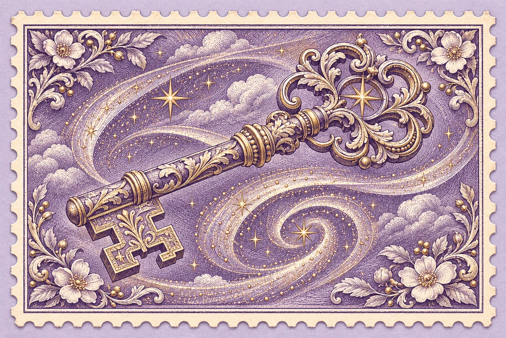

Past Life Reading
$1.45 USD
A shorter way into past-life work. If you’re curious about repeated patterns, places you’ve always felt drawn to, or a bond that feels older than it should, tell us your questions and we’ll write a past-life and karmic reading for you.
Inside your reading
Your reading covers past-life identities and roles and how they may echo today, karmic lessons and contracts, possible past-life ties to partners or loved ones, and messages from your guides. It ends with suggestions for releasing old burdens and understanding recurring patterns. Every reading is at least 1,000 words.
- Personal reading of 1,000+ words & printable PDF
- A closing message to keep on your phone
- Digital delivery within 48 hours
Readings are written for reflection and entertainment. They don’t guarantee outcomes and can’t influence another person’s feelings or choices. They are not medical, psychological, legal, or financial advice. You must be 18 or older to order a reading.
Example reviews
Illustrative examples for this page design. These comments and ratings are fictional, not customer feedback.
An approachable first reading
The shorter format was a good introduction to symbolic past-life themes. I could take it in during one sitting.
The repeated pattern gave me a prompt
I used the central theme to reflect on a familiar habit. It was an interesting starting point for journaling.
A cohesive little narrative
The separate impressions were tied together clearly. The ending returned to the question I had shared.
The key illustration felt fitting
I loved the engraved spiral and key. It made the reading feel like a small keepsake.
I was curious to go deeper
The main idea was engaging. I would have liked a longer explanation of one of the symbols.